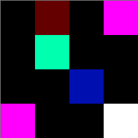

Due Date: May 31 @ 06:00 p.m.
Introduction
In this assignment you will practice your newly acquired C skills by implementing some functions for manipulating images. We will use the PPM (portable pix map) format, as it is one of the easiest to understand and process. PPM is often used as an intermediary format, i.e. the lowest common denominator color image format, that nearly all other formats (e.g. jpg, gif, png) can be translated to and from. We're explaining how this format works in more detail below.The PPM Image Format
The PPM (or Portable Pix Map) image format allows for images that are encoded in human-readable ASCII text (as opposed to a binary format), so the contents can be viewed in a text editor. You can think of an image as a matrix of pixels. Each pixel for a color image is encoded by three numbers representing the color of the pixel, i.e. the corresponding red, green and blue (RGB) values of that pixel. A PPM image file contains information on all the pixels in the image (in the body of the image file), preceded by a header. The 8 lines below are a sample ppm file. You can download it here, if you want to view it in a text editor. The first 3 lines comprise the header and the remaining lines the body.
P3
4 4
255
0 0 0 100 0 0 0 0 0 255 0 255
0 0 0 0 255 175 0 0 0 0 0 0
0 0 0 0 0 0 0 15 175 0 0 0
255 0 255 0 0 0 0 0 0 255 255 255
Image Header
You can think of the image as having two parts, a header and a body. The header consists of four enteries: P3
4 4
255
P3 is a "magic number". It indicates what type of PPM image this is. For this assignment it will always be P3. P3 stands for
color and ASCII encoded images.Next comes the number of columns and the number of rows in the image (4 x 4). (The first number refers to the number of columns and the second number to the number of rows).
Finally, we have the maximum color value 255. This can be any value between zero and 65536, but a common value is 255.
Note that in the sample file the four components (the magic number, # columns, # rows, maximum color) of the header are on three different lines. This formatting is to improve human readability. The ppm standard only requires that the four components are all separated by at least one whitespace (e.g. a blank, a TAB, a newline).
Image Body
The image body contains the actual picture information. Each pixel of the image is a tiny, colored square. The color is determined by how much red, green, and blue are present. So, 0 0 0 is the first color of the image, which is black, and the last pixel in the image is 255 255 255, which is white. By varying the levels of the RGB values you can come up with any color in between.You can see that the body of the sample image above has four rows, and each row has 12 numbers, corresponding to the 4 pixels in each row (since the file has 4 columns and each pixel requires 3 numbers).
Note that color values must be separated by at least one space, but there could be additional whitespace, which would be ignored by an image viewer. In the sample ppm above we used additional whitespace to format the image so that it is easy for a human to understand, but the computer doesn't care how much whitespace there is between pixels or the colors within a pixel. Also, in the sample ppm file above there is one line for each row of the matrix, i.e. we have all the pixels of one row of the matrix in one line. We have done that for better readability, but the format does not require this. E.g. a valid ppm image could also have all the pixels of the image (of all the rows in the matris) in one line, or on the other extreme each pixel in the file could be on a separate line. The only constraint is that no line can be longer than 70 characters. The important thing is that the pixels are listed in the right order, starting with the elements of the first row of the matrix, then the second row, and so on.
Putting it all together
The example image above would look something like this:
Keep in mind, each square is one pixel, so the real thing is much smaller (the rendered image was blown up by 5000%).
For those of you who wish to have the experience of reading real documentation, the formal image specification can be found here.
A simple image editor
Your job is to write a program called image_editor that serves as a simple image editor that supports three different functions.- Red-removal: Takes an input image and removes the red from it.
- Black-white: Converting an input image to black and white.
- Instagram: The instagram function, which converts an image to a square image.
Usage: image_editor OPTIONwhere OPTION has to be one character, which is either 1 for red-removal, 2 for black and white conversion or 3 for the instagram function.
We are providing two files as starter code, which you are expected to modify:
image_editor.c contains the main function of the program. At the moment this function does
nothing, but this is where you will add code
to process the commandline argument and then call the corresponding image processing function.
image_processing.c contains the skeletons of the three functions, which you will complete, such that they
read the input image from the keyboard, perform the
corresponding conversion and then use printf to write the output image to STDOUT (i.e. the screen).
Task 1: Command-line arguments
The first task is to complete the main function in image_editor.c. Add code to check the number of command-line arguments and the value provided as the first argument. An error message should be printed, if the user provides the wrong number of arguments or if the argument is invalid (i.e. it is not one of either 1, 2, or 3), as follows:
Error: Expecting one command-line argument, which needs to be either 1, 2, or 3.If an error message is printed, the program should terminate without trying to read and process an image. Otherwise, if the command-line argument is ok, the main function should call the corresponding function to read the image and do the appropriate conversion.
Processing of command line arguments will be covered in week 3 PCRS material, so you might want to wait with implementing this part until we get there.
Task 2: The red remover
Your next task is to write a function remove_red() which will remove all the red from an image. The function reads an input image from the keyboard, sets the red value of each pixel in the input value to zero, and prints the resulting image.Task 3: The black and white converter
The second task is to write a function convert_to_black_and_white(), which will convert an image from color to black and white. Converting a pixel to black and white is done by averaging the values of all three color numbers for a pixel, the red, green and blue, and then replacing them all by that average. So if the three colors were 25, 75 and 250, the average would be 116, and all three numbers would become 116. So the black_white() function reads an input image from the keyboard, converts it to black and white (by converting each pixel as described above) and then printing the new output image to STDOUT (i.e. the screen).You might wonder at this point what happens if the result of the division in computing the average is not an integer. You will see once you have completed the week 3 PCRS prep, that when you divide an integer by another integer in C the result will be an integer (if the result has a fractional part it will be truncated). We ask you to use this form of truncation when doing the division.
Task 4: The Instagram function
For those of you who remember, the signature feature of the original Instagram app was that it converted any image to a square image. You would upload a rectangular image of arbitrary dimensions and it would chop it to a square image. That is the functionality that you are implementing in the third task of the assignment in a function called instagram_square().The instagram_square() function reads an input image from the keyboard, and if necessary removes parts of it to make it square, and prints the new image.
When a file needs to be chopped to become square, your function will remove the right-most columns or bottom rows, depending on which one is the larger dimension. For example, an input image with 4 columns and 6 rows will be converted to a (4 x 4) image by removing the last two rows of pixels. Similarly, an image with 6 columns and 4 rows will be converted to a (4 x 4) image by removing the last two columns (the pixels on the right side of the image)>.
Remember that you will also have to modify the header to reflect the new dimensions of the image.
Some important hints
Here are a few things to remember as you implement and test the three functions:
- The input image is provided on STDIN, so you should use scanf to read input.
- The converted output image should be printed to STDOUT, so you should use printf. Your program should not produce any other output, besides the output image. The only exception is an error message, in case there is a problem with the command line arguments.
- As it might be cumbersome to enter an input file at the keyboard, you can use a unix feature called
input/output redirection to make life easier. By default, standard input (STDIN) is
connected to the terminal keyboard. But you can use the input redirection operator (<)
to connect the STDIN for a program to a file instead. For example, by running your program image_editor as follows:
./image_editor i < sample_file.ppm
your program, when executing scanf, will be reading from the file named sample_file.ppm instead of the keyboard. All the contents of the file will appear to your program as if they were entered from the keyboard. - If you provide input by typing at the keyboard, you terminate the input (provide EOF) by typing ctrl-D in a new (empty) line.
- Start by testing with small files, such as the sample ppm we have used above and make sure things work as expected.
- Once things seem to be working for small files, you can try larger ones. We will provide a number of sample ppm files for you to play with.
- You might be tempted to use an array to first read the entire input image and store the pixels of the input image in the array, and then do another pass over the array to produce the output file. This has some problems. One is that you will be using up more memory than necessary, as you can implement all the functionality without creating an array that contains the image pixels. The other one is that we have not yet seen how to dynamically allocate arrays with a size that is not known before the program is run: Since you don't know before hand how large an image will be, you don't know how to declare an array of the proper size in your code.
- Except for Task 1, which explicitly asks you to check for specific types of invalid input, you do not need to perform error checking. In particular, you may assume that the input file provided to your program is a valid ppm file.
- You can create your own ppm input files by converting your own images (e.g. in jpg format) to ppm images
using the mogrify command. It can be used to convert most common image formats to ppm, and vice versa.
If you're working on the lab machines, the following command will convert a jpg image file named input.jpg to a ppm file named input.ppm.
mogrify -format ppm -compress none input.jpg
And the following command will convert a ppm image named input.ppm to a jpg image named input.jpg.mogrify -format jpg -compress none input.ppm
mogrify is part of a software suite called imagemagick. If you want to run this on your own computer, you will have to download imagemagick here and install it. - If you want to view ppm files, you can either use mogrify to convert them to a more common format, like jpg, that any image viewer supports. Or you can use an image viewer that supports ppm. It seems that on Macs new versions of Preview support ppm, on linux machines gimp can open ppm.
- Your program should support any type of valid ppm P3 image as an input. In particular, there might be
an arbitrary number of whitespaces separating the different fields, and the row, column and max color
fields could be any positive integer value.
If you read the formal specifications you will see that ppm supports a few things we have not talked about, including for example comments (lines that start with a #). Your program is not required to support any ppm features that are not discussed in this assignment handout. - Your program must output images that are valid in the P3 format, e.g. that means you must also output the appropriate P3 header and not just the pixel data.
- Test thoroughly before submitting a final version. We are using automated grading tools, so your program must compile and run according to the specifications. In particular, your program must be able to run on any valid ppm input file and produce only valid ppm output files.
Submission and Marking
We are using automated grading tools to provide functional feedback, so it's important that your submission be fully submitted and compile cleanly.
Your program must compile on the lab machines or mathlab, so please test it there before submission. We will be using gcc to compile program with the flags -Wall and -std=c99:
gcc -Wall -std=c99 -o image_editor image_editor.c image_processing.c
Your program should not produce any error or warning messages when compiled. Programs that do not compile will receive a 0. Programs that produce warning messages will be penalized.
For this assignment you will be working individually (rather than in teams). You will be submitting via svn to Markus. The instructions below will setup your svn work environment. If you are not already familiar with version control, make sure to review the lecture material from Week 2.
Your first step should be to log into mathlab or any of the lab machines in BV 473 using your UtorID and password. Create a directory in your home directory called cscb09 (directories are created using mkdir). Change into that directory (using cd). Verify that you are actually in the right directory (running pwd should return /cmshome/your_utor_id/cscb09). The following commands should accomplish the above:
mkdir ~/cscb09
cd ~/cscb09
pwdNext you need to check out your SVN repo. To check out your SVN repo you need to log in to Markus and click on A1. You will see on the right side a field saying "URL to your group's repository". The URL will probably have the form http://markus.utsc.utoronto.ca/svn/cscb09s17/your_utor_id. Your repository will only be generated by the Markus server once you log in and click on A1 and it might take a little while. So wait a bit before you try to check out your repo into the cscb09 directory you created earlier. You check out your repo from the shell command-line using svn checkout with your repo's URL as the argument, so this should look something like :
svn co http://markus.utsc.utoronto.ca/svn/cscb09s17/your_utor_idYou will be asked for a password which is your usual utorid password. You will find the repository in your current working directory (the place from where you were running the svn checkout command). It will be a directory named after your utorid and you will see that it contains a sub-directory called A1. (Use ls to check that the directory is there). This directory is a working copy of your svn repository.
For this assignment you will need to submit two files: image_editor.c and image_processing.c. You will need to create these two files inside the A1 directory in your repository. After you first create these files in your A1 directory you need to add them to your repository by running svn add inside your A1 directory.
svn add image_editor.c image_processing.cAs you work on these two files while implementing this assignment, you want to periodically upload your modifications to the svn server by running svn commit. You commit by running the following in your A1 directory (with a message of your choice):
svn ci -m "Committing a new version of A1"You can log into Markus to view the files it has received.
When doing the marking, we will use the latest version of your A1 that was committed before the deadline.